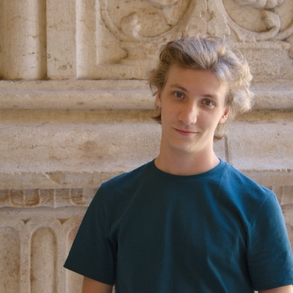

Alexandre Andre
I’m a PhD student in CIS at the University of Pennsylvania, advised by Eva Dyer in the NerDS Lab, working at the intersection of deep learning and neuroscience.
My research centers on representation learning for neural recordings, spanning benchmarking and large-scale pretraining. I build models that learn from diverse neural data, across sessions, subjects, brain regions and recording technologies, and that generalize to multiple downstream tasks. I also apply these methods to other biosignals for clinical use.
I co-lead torch_brain, a library for large-scale training on neural data.
Previously Georgia Tech (MS) and Deezer (ML Eng).
Interested in collaborating, or want to use BrainWideBench or torch_brain? Reach out by email or LinkedIn.